之法律問題研究
以內政部台內國字第 1150807778 號函暨其附件為中心
法律研究報告簡報
謝秉錡律師事務所
謝秉錡律師 劉靜芬律師 何博彥律師 林育正律師 陳儒學習律師
中華民國 115 年 9 月
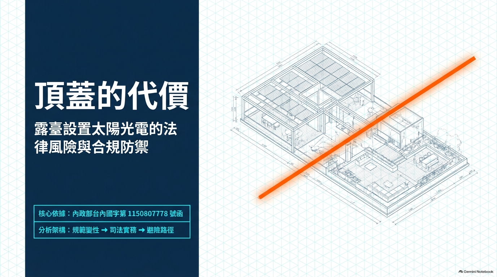
一、問題提出與研究範圍
二、法規範體系之建構
三、免照標準第 5 條之要件
四、露臺與陽臺之定性轉換
五、定性變更之實質後果
六、新設頂蓋與版本沿革
七、免照不等於免程序
八、司法實務之審查態度
九、引證核實之三項發現
十、結論與實務建議
2/20
核心問題
於建築物「露臺」設置太陽光電發電設備，是否符合免請領雜項執照之要件？
若否，該露臺將被重新定性為「陽臺」，其法律後果為何？
研究素材
行政函釋 4 件
內政部 115.07.13 台內國字第 1150807778 號函（核心）＋附件 1～3（96、106、113 年函）
法規命令 2 部
設置再生能源設施免請領雜項執照標準（114.01.13 修正）；建築技術規則建築設計施工編（115.02.23 修正）
實務見解 5 件
臺北市政府訴願決定書 1 件、行政法院裁判 2 則、能源局函釋 2 件（本研究獨立取得並核實）
3/20
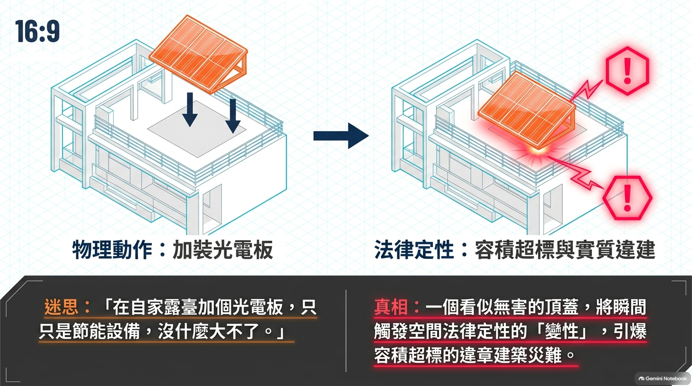
判斷順序（規範鏈）
再生能源發展條例 §17Ⅱ
法律授權
免照標準 §5
免照門檻（法規命令）
建築技術規則建築設計施工編
補充規範
建築法 §25
原則管制（應請領執照）
免照標準係「例外規定」，解釋上不宜從寬；不符合免照標準者，回歸建築法 §25 之原則管制。
4/20
再生能源發展條例 §17（授權）
設置再生能源發電、利用系統及相關設施，依不同設施特性，就其裝置容量、高度或面積未達一定規模者，免依建築法規定請領雜項執照。
前項關於免請領雜項執照之設備容量、高度或面積標準，由中央主管機關會同中央建築主管機關定之。
建築法 §25（原則管制）
建築物非經申請直轄市、縣（市）（局）主管建築機關之審查許可並發給執照，不得擅自建造或使用或拆除。
未取得免照地位者，即回歸本條管制，違反者另生建築法 §86 之拆除義務。
★ 免照標準係依 §17Ⅱ 授權訂定之法規命令，其性質為「例外」；例外規定應從嚴解釋。
5/20
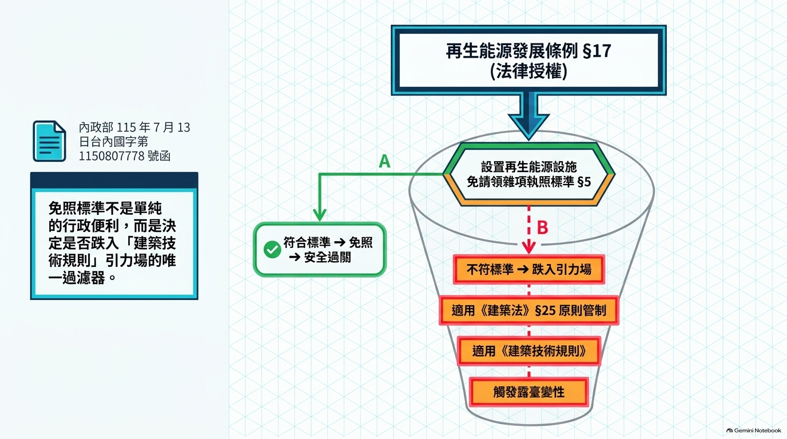
§1
授權依據（再生能源發展條例 §17Ⅱ）
§2
適用範圍：太陽光電發電設備「並得包含支撐架、新設頂蓋及運轉維護孔道或通道之設施」
§3
「建築物」四款定義（含自治條例許可、實施建築管理前已建造完成者）
§4
屋頂太陽能熱水系統 2 公尺以下免照
§5
太陽光電發電設備之免照門檻 ★本案核心
§6
輸變電相關設施保護用構造物之免照門檻
§7
設置前備查（＋四款應另檢附結構計算說明書之情形）
§8
竣工後備查（結構安全證明書、工程完竣證明書）
§9
自發布日施行
6/20
§5Ⅰ① 設置於建築物屋頂或露臺，包含支撐架並得結合新設頂蓋，其高度自屋頂面或露臺面起算四點五公尺以下。
§5Ⅱ
仰角非固定者，僅得設置於地面（露臺不適用）
§5Ⅲ
新設頂蓋之最大設置面積不得超出太陽光電發電設備之範圍 ★核心門檻
§5Ⅳ
架高之運轉維護孔道或通道，水平投影面積 ≤ 光電設備整體水平投影面積 30%
§5Ⅴ
得視為屋簷，最大設置範圍以建築物外牆中心線或其代替柱中心線外 1 公尺為限，且不得超過建築基地範圍
§5Ⅵ
合法建築物屋頂有違章建築者，其適用類型：結構分立型／結構共構型／設備安裝型
實務上最易踰越者為「光電板小、頂蓋大」——全部設備即不符合免照要件。
7/20
建築技術規則建築設計施工編 §1⑳ 露臺及陽臺：直上方無任何頂遮蓋物之平臺稱為露臺，直上方有遮蓋物者稱為陽臺。
露臺
直上方「無」任何頂遮蓋物
原核准狀態：完全不佔容積
§162Ⅰ② 得不計入容積總樓地板面積，且無比例上限
陽臺
直上方「有」遮蓋物
§1③ 每層陽臺面積和 ≤ 建築面積 1/8
§162Ⅰ① 未超過該層樓地板面積 10%（住宅 12.5%／8㎡）
★ 區別僅繫於「直上方有無任何頂遮蓋物」——不問遮蓋物之材料、面積、高度、固定性或設置者身分。
設置光電設備所結合之新設頂蓋，於物理上仍構成「直上方之遮蓋物」，故可能引致空間定性變更。
8/20
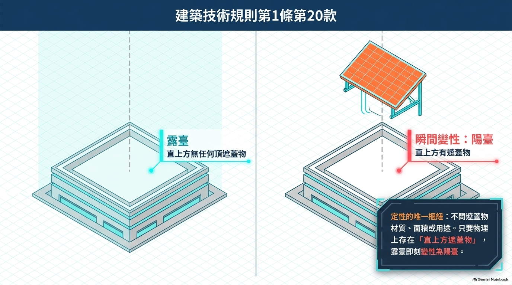
同一物理空間之法律地位：由「完全不佔容積」轉為「受上限拘束」
比較項目
露臺（原狀態）
陽臺（變性後）
建築面積
不計入
每層陽臺面積和 ≤ 建築面積 1/8（§1③）
容積總樓地板面積
得不計入，無比例上限（§162Ⅰ②）
未超過該層樓地板面積 10%；住宅 12.5% 或 8㎡（§162Ⅰ①）
超出上限之效果
超出部分應計入，直接衝擊建蔽率與容積率合規性
工廠類建築物
§296：陽臺不計入之規定於工廠類建築物不適用
注意：§162 位於「容積設計」章，以「實施容積管制地區」為前提（§160）；非容積管制地區回歸 §1⑤⑦ 處理。
9/20
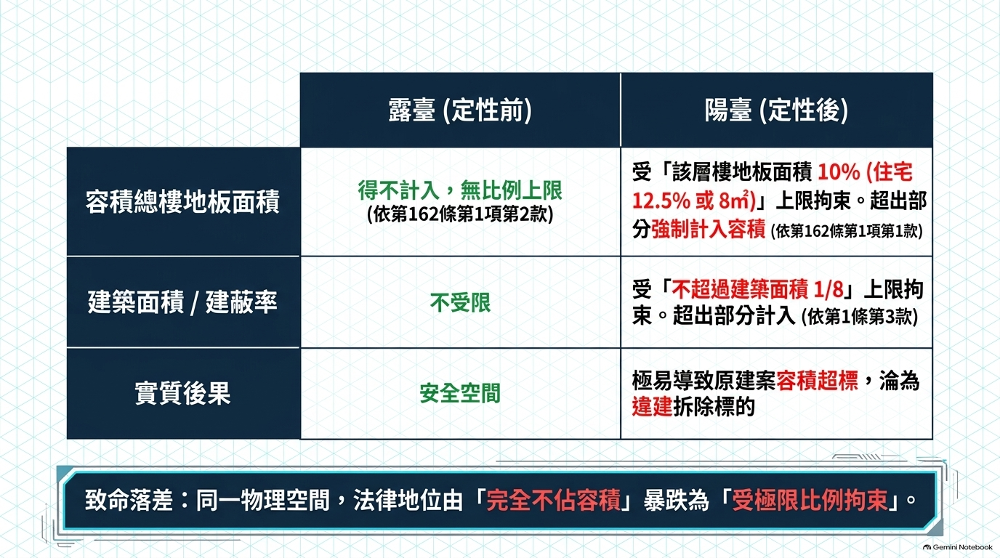
第一步
是否符合免照標準 §5 所定要件？
符合 → 免請領雜項執照
第二步
若符合，建築技術規則是否適用？
不適用（113 年函）
第三步
若不適用，是否觸發 §1⑳ 之露臺變性？
不觸發
★ 關鍵洞見：合規反而安全、超標反而變性
是否被認定為陽臺，形式上取決於是否「超標」，實質上則取決於申請人是否恪守免照標準 §5 之各項限制（尤其第 3 項頂蓋面積）。
舉證重心應置於「免照標準 §5 要件是否該當」，而非事後爭執空間定性。
10/20
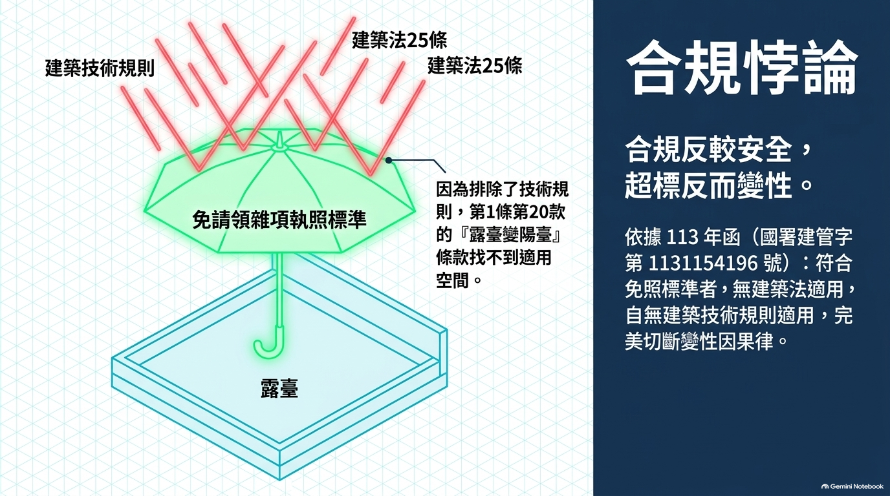
§2Ⅱ① 太陽光電發電設備：除應有利用太陽電池轉換太陽光能為電能之發電設備外，並得包含支撐架、新設頂蓋及運轉維護孔道或通道之設施。
三層限制
① 面積限制（§5Ⅲ）
頂蓋最大設置面積不得超出太陽光電發電設備之範圍——不得以頂蓋作為變相增建之手段
② 程序加重（§7Ⅱ④）
「設置支撐架結合新設頂蓋」為應另檢附結構計算說明書之獨立事由——露臺加裝頂蓋者必然適用
③ 範圍限制（§5Ⅴ）
視為屋簷，最大設置範圍以建築物外牆中心線或其代替柱中心線外 1 公尺為限，且不得超過建築基地範圍
★ 實務風險：最常見之踰越型態為「光電板小、頂蓋大」，此際全部設備均不符合免照要件。
11/20
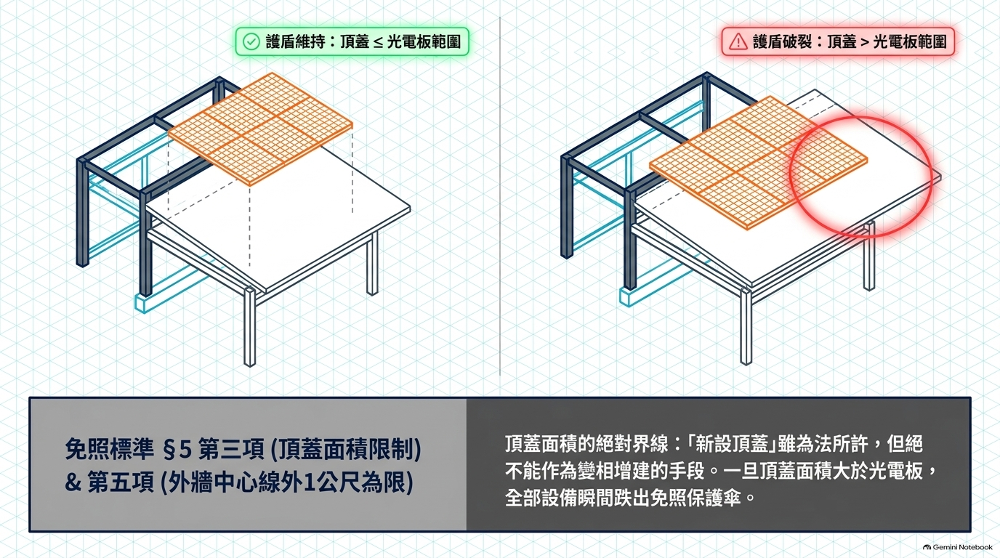
版本
§2Ⅱ 之內容要旨
101.09.17
不含頂蓋之支撐架
103.09.22
太陽光電模組、無頂蓋之支撐架及其他轉換太陽光能為電能之必要設施
105.09.10
同上（不含頂蓋）
106.09.30
無頂蓋之支撐架及運轉維護孔道或通道之設施
107.05.10
同上（不含頂蓋）
114.01.13（現行）
並得包含支撐架、新設頂蓋及運轉維護孔道或通道之設施
★★ 結論：能源局 106 年函、最高行政法院 111 上 29、更一審 112 訴更一 102 所稱「不包含具有頂蓋之支撐架」，均係適用舊版之結果——就現行案件之頂蓋問題已失其依據。
援引任何實務見解前，務必先確認「其所適用之法規版本」。
12/20
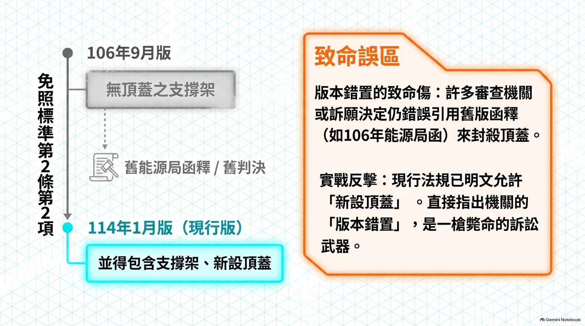
設置前
§7Ⅰ 檢附：①再生能源發電設備同意備案文件影本 ②建築師／土木技師／結構技師出具之免請領雜項執照簽證表（附件二）及剖面示意圖、平面配置圖、立面圖
設置前（加重）
§7Ⅱ 太陽光電發電設備有下列情形之一者，應另檢附結構計算說明書：①設置高度超過 3 公尺 ②設置仰角非固定 ③設置範圍超出建築物外牆中心線或其代替柱中心線 ④設置支撐架結合新設頂蓋
竣工後
§8 檢附結構安全證明書（附件三）、工程完竣證明書（附件四）及剖面示意圖、平面配置圖、立面圖，報請主管建築機關備查
★ 司法實務之權威表述（最高行政法院 111 年度上字第 29 號判決）
「再生能源設施之建造，必須先經建築主管機關認定符合免雜條件而出具免雜同意備查函，始獲得免除請領雜項執照之便利以進行建造。反之，如未取得免雜同意備查函，即等同未經豁免建築法所要求之建築許可，在建造行為之前，請領雜項執照仍屬法定應踐行之程序。」
13/20
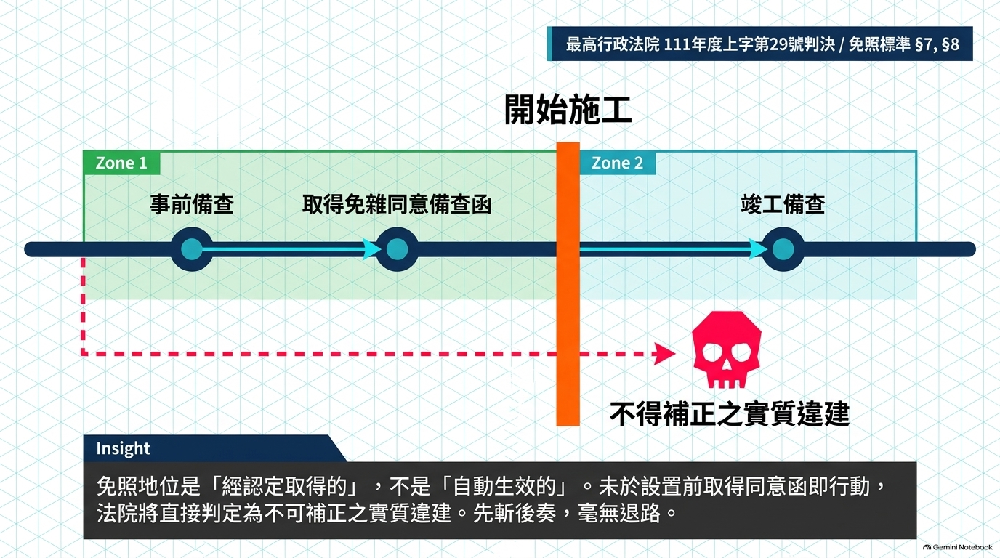
實質違建
未依建築法規定申領建築執照擅自建造，且
★ 無法補正
於免照類案件：未於設置前取得免雜同意備查函，即未取得免照地位
程序違建
位置、高度、結構、建蔽率等均不違反當地都市計畫建築法令，且獲得土地使用權
僅程序上疏失，未領建築執照擅自興工
得限期補照
★ 更一審判決之認定（臺北高等行政法院 112 年度訴更一字第 102 號）
「原告未得建築許可逕行建造系爭設備Ｂ完竣，此部分已具違章狀態，自然屬於違建，且屬不得補正建築執照之實質違建。」
→ 露臺加裝光電而「先設置、後補申請」者，於司法上失去補正空間。
14/20
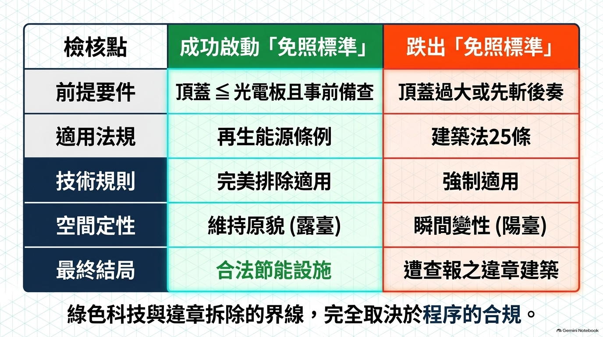
三則實務文書（本研究獨立取得並核實）
臺北市政府訴願決定書
114.09.08 府訴三字第 1146084318 號
訴願駁回｜原處分：114.05.14 不予備查
臺北高等行政法院判決
114.06.12 112 年度訴更一字第 102 號
原告之訴駁回｜更一審
最高行政法院判決
112.11.16 111 年度上字第 29 號
原判決廢棄發回（訴之聲明第 1 項部分）
個案事實：屋頂平臺女兒牆上設置窗形光電設備（1.1 瓩），與違建（含壁體、窗戶、屋頂鐵皮）共構作為居室使用。
15/20
① 免雜同意備查函之先行性
免照地位須「經主管建築機關認定並核發免雜同意備查函」後始取得；未取得者，請領雜項執照仍屬法定應踐行之程序。
② 免雜範圍以申請時圖說為準
主管機關「不得事後援用能源局 106 年 11 月 9 日函復意旨指『增設頂蓋及窗戶』非免雜標準所適用之範圍，任意限縮其已同意備查之範圍」。
③ ★ 能源局函不得作為認定基礎
「不具職權以認定免雜同意備查函所及範圍之能源局 106 年 11 月 9 日函、107 年 5 月 14 日函……作為認定事實之基礎，實有認定事實違背論理法則之違誤。」
★ 審查重心：免雜同意備查函是否存在、其所及範圍為何、與拆除處分之範圍有無交錯重疊。
16/20
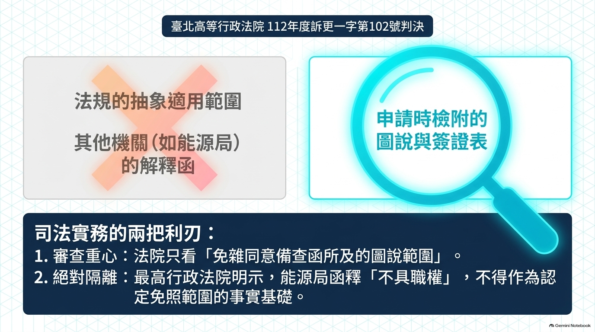
依「三層核實法」：①條號是否存在 ②引文是否出自該裁判 ③省略是否致語意變更
發現一 訴願決定書之引述失真
該決定書稱「不包括增設窗戶」業經更一審判決「所肯認」；惟該判決實則明言「系爭設備Ｂ並非窗戶」「與常見之窗戶裝置有所相異」，並自承「訴願決定雖理由與本院不同」，係以「未於設置前申請備查」之程序理由駁回。
發現二 能源局函之職權問題
最高行政法院已明示能源局「不具職權」認定免雜同意備查函所及範圍，以之為認定事實之基礎違背論理法則；而訴願決定書卻正以該函為依據——兩者直接衝突。
發現三 版本錯置風險
能源局 106 年函及二則判決所稱「不包含具有頂蓋之支撐架」，均係適用 103～107 年版之結果；於現行版明文「並得包含支撐架、新設頂蓋」之下，該部分見解已失其依據。
★ 援引上開實務文書時，務須自行過濾其引述，不得照錄。
17/20
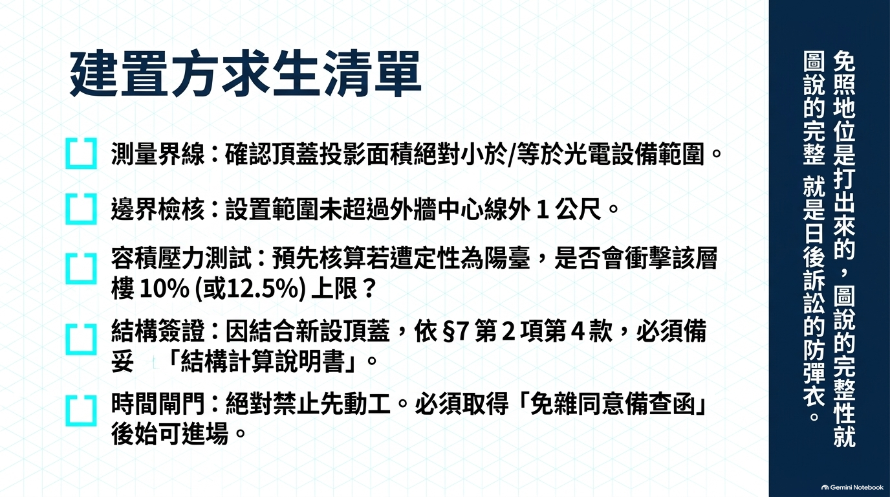
務必於「設置前」申請免雜同意備查（§7Ⅰ）
「先設置、後補申請」於司法上屬不得補正之實質違建
申請時之圖說應完整揭露設備範圍
含支撐架、新設頂蓋之投影尺寸、附屬設施；免雜範圍以申請時檢附之文件與圖說為準
注意 §5Ⅲ 頂蓋面積不得超出光電設備範圍
此為實務上最易踰越之門檻
竣工後再申請竣工同意備查（§8）
憑免雜同意備查函及竣工同意備查函向能源署申請設備登記
基地已有違建者，注意地方政策
臺北市僅放寬「結構分立型（A 型）」；結構共構型、設備安裝型於違建拆除前仍不同意
★ 申請文件與圖說之完整性，即為訴訟上之決勝基礎。
18/20
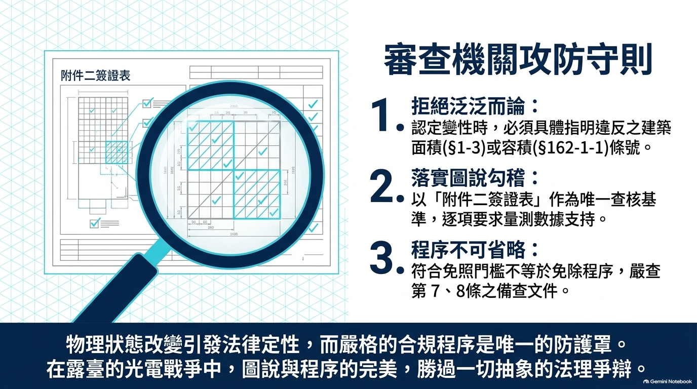
不得僅援引「符合免照標準 §5 要件」抗辯
免照地位之取得繫於「主管建築機關核發之免雜同意備查函」，而非「要件之抽象該當」
主張免雜範圍時，以申請時之簽證表、結構安全證明書及圖說為據
若申請文件所揭露之範圍大於主管機關事後認定之範圍，得據以主張「不得事後任意限縮」
★ 若相對人援引能源局 106 年 11 月 9 日函
得直接援引最高行政法院 111 年度上字第 29 號判決反駁——該函不具職權，以之為認定事實之基礎違背論理法則
★ 援引任何函釋或裁判前，先確認其所適用之法規版本
避免「版本錯置」——尤其「新設頂蓋」於 106.09.30 版仍不在適用範圍內
19/20
研究結論（摘要）
① 規範鏈：再生能源發展條例 §17Ⅱ → 免照標準 §5 → 建築技術規則 → 建築法 §25
② 露臺／陽臺之分野為單一物理標準（§1⑳），不問遮蓋物之性質與設置者
③ 定性變更之實質後果重大（由不佔容積→受 1/8 及 10%／12.5% 上限拘束）
④ 「合規反較安全」——舉證重心置於 §5 要件該當性
⑤ 免照地位係「經認定取得」，非「符合要件自動取得」
⑥ 版本錯置為主要實務風險；能源局函不得作為個案認定基礎
主要資料來源
內政部台內國字第 1150807778 號函暨附件 1～3｜設置再生能源設施免請領雜項執照標準（114.01.13，全文 9 條）｜建築技術規則建築設計施工編（115.02.23）
臺北市政府 114.09.08 府訴三字第 1146084318 號訴願決定書｜臺北高等行政法院 112 年度訴更一字第 102 號判決｜最高行政法院 111 年度上字第 29 號判決
謝秉錡律師事務所 115 年 9 月
20/20